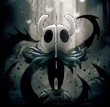
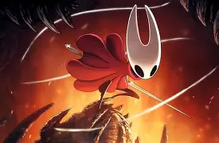
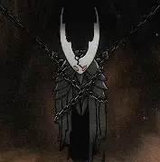

Sobre o jogo
Hollow Knight é um jogo indie do gênero metroidvania desenvolvido pela Team Cherry. O jogo foi lançado em 2017 e rapidamente se tornou um dos maiores sucessos entre os jogos independentes.
A aventura acontece em Hallownest, um reino antigo cheio de mistérios, criaturas perigosas e áreas secretas. O jogador controla o Cavaleiro, um pequeno guerreiro silencioso que explora cavernas, enfrenta chefes desafiadores e descobre os segredos do reino.
Personagens

Knight
O Knight é um Receptáculo. Ele é filho do Rei Pálido e da Dama Branca, nascido em o Abismo com Vazio dentro de sua carapaça. Hornet é irmã do Knight por meio de seu pai comum. Como o restante de seus irmãos Vasos, o Knight não tem gênero.

Hornet
Hornet é a misteriosa princesa-protetora das ruínas de Hallownest, uma personagem importante de Hollow Knight e protagonista de Hollow Knight: Silksong. Ela empunha uma agulha e linha com proezas mortais.

O Hollow Knight
O Hollow Knight é o Receptáculo escolhido pelo Rei Pálido para selar a Radiância e salvar Hallownest da Infecção. Como seus irmãos, ele é filho do Rei e da Rainha de Hallownest, nascido no Abismo e preenchido com o poder do Vazio. Sendo assim, ele não tem gênero.
Hollow Knight: Silksong
Após o enorme sucesso do primeiro jogo, a Team Cherry anunciou Hollow Knight: Silksong, sequência focada na personagem Hornet.
O jogo se tornou um dos títulos indie mais aguardados da indústria, gerando enorme expectativa entre os fãs ao redor do mundo.